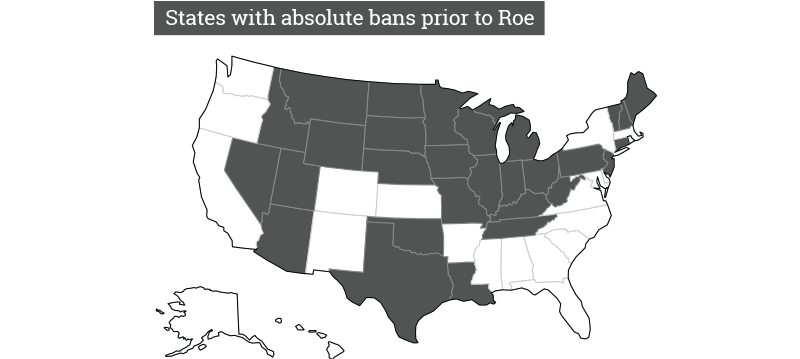
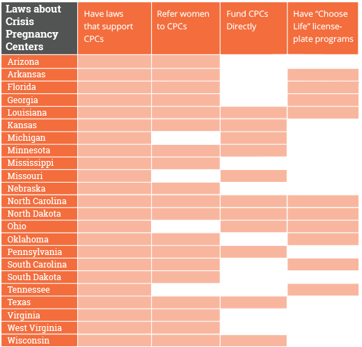
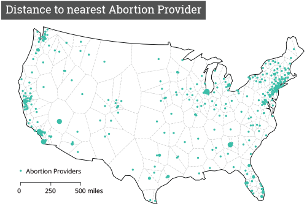

Due to complex laws, political jargon, and emotional fervor, abortion policy is a contentious topic. There is a wealth of information and misinformation. The combination of vague terminology and lack of uniformity among state laws makes it difficult to interpret the true national status of abortion rights.
This is a challenging subject to talk about, but we believe it is important to make the information that we have collected available. We do not believe that all people who consider themselves pro-life intend to cause harm or restrict women's rights. Regardless, that is what we think these laws do.
Below, we hope to shed some light on various types of abortion restrictions and explain why they're considered controversial and harmful.
Background
In 1973, the Supreme Court decided in the case of Roe v. Wade that abortion fell within the right to privacy protected by the Fourteenth Amendment. This decision prevented states from interfering with a woman’s access to abortion in the first trimester, but allowed states to regulate the second & third trimester provided the regulations protected the health of the mother.[1]

Since then, states have passed legislation to restrict a woman's access to abortion within the confines of the Roe v. Wade decision. Many have been more aggressive, legally fighting against Roe by re-litigating similar cases, some of which have indeed weakened it’s precedent.
The abortion debate has became a more prominent topic in the political debates of the last two decades leading to a distinct rise in restrictive laws. More laws relating to abortion restrictions have been passed between 2011 and 2013 than were passed between 2001-2010.[2]
The Report Card
We present grades as devised by NARAL, which are based on each states policies regarding a woman's choice and access to abortions. Most of the failing grades come from state's which boast one or more of the restrictive laws discussed here while an “A” grade required laws which instead protected or further ensured choice and access.
We've taken the liberty of dropping the “+” and “-” from their grades for the sake of clarity.
More information on the methodology can be found at NARAL’s website.
Abortion Probition Laws
The first major blow to Roe v. Wade came in 1991 with the case of Planned Parenthood v. Casey, in which the US Supreme Court questioned whether Pennsylvania’s laws requiring informed consent, 24 hour waiting periods, and parental consent violated Roe v. Wade. Despite upholding Roe v. Wade, the court also affirmed all of Pennsylvania’s laws except for one, which required the father being informed.
This decision set the new standard: Abortion regulation is fine, provided it doesn’t impose “undue burden” on a woman seeking abortion; undue burden defined as a “substantial obstacle in the path of a woman seeking an abortion before the fetus attains viability.”[3]
From that vague decision all of the following restrictions became validated.
Partial Birth
In 2003, the U.S. Congress passed the Partial-Birth Abortion Ban Act, which was upheld by the Supreme Court in 2007. The law prohibits abortions via the “partial-birth abortion” procedure. Coined by the National Right to Life Committee in 1995, it originally referred to a specific type of abortion called the “intact dilation and evacuation".
In the ruling, however, the term doesn't refer to any precise medical procedure, but rather any abortion where the doctor “deliberately and intentionally vaginally delivers a living fetus until, in the case of a head-first presentation, the entire head is outside the mother, or, in the case of breech presentation, any part of the fetal trunk past the navel is outside the body of the mother.”[4]
The issue here is that the ban completely disregards cases where the woman's health may be at risk. In cases where the fetus develops an illness undetectable until the second trimester, procedures banned by this law are widely considered the safest way to end the pregnancy without damaging the woman's cervix. The negligence of the law is addressed in 32 states with exceptions, but in 29 those exceptions are only made when the woman's life is in danger.[5]
Trigger laws
Due to Roe v. Wade, it is illegal for states to not provide abortions if the woman's life is endangered. However, many states still have laws which, while unenforceable, are still on the books from before 1973. Some states have even passed laws which won’t come into effect unless Roe v. Wade is overturned.[6]
These laws are nicknamed “Trigger Laws:” A law that is unenforceable at present, but may become relevant if a “trigger event”, in this case Roe being overturned, occurs. Because of this, the trigger laws can only themselves be overturned through the state legislature after going into effect.[7]
Counseling
Terminating a pregnancy is a difficult choice. Counseling as an option to both inform and help a patient through such an emotional process is an invaluable asset that women considering an abortion should have access to. Mandated counseling goes beyond that, requiring doctors to present information designed to discourage a woman from seeking abortion.
The issue of mandated counseling is further exacerbated by the overwhelming presence of crisis pregnancy centers (CPC) in comparison to abortion providers.
CPCs provide useful services like free pregnancy tests, ultrasounds, diapers, parenting classes, and sometimes even housing, but also have a reputation for misinformation and are not medically licensed.[8]
They actively disseminate erroneous and/or false information to women seeking advice regarding pregnancy. These include dubious claims of links between abortion, breast cancer and female infertilitiy, that condoms are ineffective, that abortion pills are dangerous, that abortions lead to permanent psychological damage, that abortion is dangerous and could kill the patient, and many more unsatiated claims.[9]
Despite that approach and their reputation, CPCs received $60 million of federal funding by 2006 and at present outnumber legitimate Abortion Clinics by about 700.[10] CPCs are eligible for the funding because their primary mission is to promote abstinence, though the link between women’s counseling, abstinence, and abortion are hard to deny. In multiple cases, CPCs set up signage or establishments near to Planned Parenthood that leaves off their affiliation, leading to confusion from women seeking accurate information.[11]
Whereas CPCs are directly assisted by state governments, Abortion Providers are subjected in 45 states by restrictions which are not imposed on other medical professionals. These are referred to as Targeted Regulation of Abortion Providers, or TRAP laws. Common TRAP laws require doctors to convert their practices to mini-hospitals at great expense, limit abortion care to hospitals or other specialized facilities or physicians offices, and/or require doctors to have admitting privileges at a local hospital with nothing requiring facilities to grant that privilege.[12]
As a result, in many states Abortion Providers can only exist in large cities, while CPCs thrive in the small towns and rural areas.

Waiting Period
In all states, before receiving an abortion, a woman needs to offer “informed” consent. This step involves being provided with the states considerd adequate information, and then in some states, a required waiting period of at least 18 hours between the counseling and the abortion.[13]

There are no studies conclusively proving this waiting period helps with the decision, but there are multiple which point out the consequences of it. As you can see in the above map, most abortion clinics are located in major cities. One study cites an average travel distance of 42 miles necessary to travel, with the farthest being 400 miles.[14] When factoring in travel costs and stress of making the trip, intentionally or not, waiting period laws put an unnecessary burden on women in rural areas seeking abortions.
Parental Consent
The majority of teenagers under the age of 18 who have abortions involve at least one parent. The teens who choose not to inform their parents generally have a good reason not to do so. In those cases, concerns include getting kicked out of the home, mistrust based on parents' previous actions, or abuse. While these may be rare cases, they've been shown to be legitimate.[15]
All states that mandate parental consent allow for exceptions from a judge or doctor, but finding them and obtaining their consent can be a very time consuming process in a very time-sensitive situation. There is no evidence that mandated consent has an influence on parental involvement.[16]
Ultrasound
The most recent type of state legislation introduced to restrict abortion are for mandatory ultrasounds. An ultrasound is a medical procedure that sends high frequency sound waves through a pregnant woman's body to create an image of the fetus inside.[17] For observations of the fetus's development, ultrasounds are great.
Initially introduced in the late 1980’s, state legislation regarding ultrasounds has become more prevalent since 2004. These laws range from simply requiring doctors to inform a woman of the procedure, to requiring it to be offered, to mandatory prior to an abortion.
Ultrasounds are not a medically necessary component of a first-trimester abortion. When they become a requirement, adding another hurdle to the process. Further intrusive is the policy in Louisiana, Texas, and Virginia that require the ultrasound image to be shown and described ultrasound procedure. While patients are allowed to look away or close their eyes, depending on the circumstances of the abortion, it can be a emotionally painful experience.
Mandatory ultrasounds replace informed-consent with coersion. Not about the ultimate decision, but how a woman chooses to get there.[18]
More Information
For more detailed information on state-level Abortion laws, we recommend:
Guttmacher Institute
Planned Parenthood
NARAL, Pro Choice America